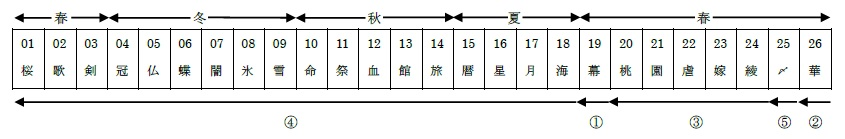

詳しくは「『桃華月憚』アンオフィシャルガイド2013年度版」を参照のこと。
2007年の4月2日から9月24日まで放送されたテレビアニメであり、オービットのROOTブランドから発表された同名のアダルトゲームが原作となっている。ただし、原作の発売日は07年5月25日であり、このことからも分かるように内容は殆ど原作とは異なるものである。
スタッフは2004年のアニメ『ヤミと帽子と本の旅人』における、スタジオディーン変態集団と名高い人々が参加した。その内訳は、
このアニメは逆再生方式を取っている。1話にて最終話の内容を放映し、2話では25話、3話では24話……そして最終話では1話に戻る、ということである。 放送当時はこの構成は明らかにされないまま放送が始まり、6話になってからようやく制作側からの発表がされた。
また、他にも女性声優が脚本や原画を書く、全く違うアニメとのコラボが挟まれる、キャラクター達が1話まるまる演劇をするなど、物議を醸す要素がてんこ盛りで、いまだにカルト的人気を持つ作品でもある。
上津未原の地には、太古の昔に行われた「古の儀式」により、石剣・仮面・龍皇の力が暴走し、様々な魔物が支配していた。また、その際に三女神ジュナ・フウ・セイが誕生し、石剣の持ち主である死んだイサミヒコをめぐって、ジュナとセイは争いを繰り返していた。土地の守り神的な存在である鬼梗は、形式的に「上巳の歌会」を開いて魔除けを行っていたが、次第に魔界に沈んでいく土地と、力を失っていく我が身を案じ、作りかけの人形から守東桃香をつくった。桃香は石剣の力持者であり、彼はその器であった。そしてセイは川壁桃花として、ジュナは守東由美子に乗り移って、この世に甦った。また、龍皇の力を持つ犬飼真琴も、六条章子に連れられて上津未原にやってきた。
桃歌台学園に入学した桃香と桃花は、記憶が無いことに戸惑っていたが、しだいに守東家の人々や同級生と打ち解けていき、また二人も互いを想うようになった。また桃香はもともと、由美子の子どもとして扱われた。しかし、桃香と桃花の登場は、一年後の「消滅の儀式」の序章でもあり、儀式が近づくに連れて、それぞれの力を抑えきれなくなり、争いも再び起こるようになる。フウもこの世に舞い降りた所で、いよいよ儀式は行われたが、三女神の消失にあわせて桃花は消え、桃香はこの世に取り残されてしまった。悲しみに暮れる桃香も消え、上津未原の地は浄化された。
時は流れ、どこかの駅で、電車から降りた桃香を待っていた桃花は、突然告白をする。二人は別世界へと転生したのであり、そしてついに結ばれたのだった。

参考作品1.『メメント』（2002年、クリストファー・ノーラン監督）
同じく逆再生の方式をとり、10分ずつ時間が遡る構成にした映画である。また一段階遡る際に、時系列に沿った短いシークエンスが挿入され、クロスカッティングを用いた展開がなされていく。ゆえに非常に視聴が困難となっていて、序盤は退屈するが、各段階の微妙なつながりを追いかけるのが楽しく、またラストで明かされる驚愕の真実により、逆再生の意義を明瞭にしている。
『桃華月憚』はよくこれの真似をしていると言われる。下に要約した『カオスアニメ大全』からの批評も、二作品を比較してのものである。しかし、『桃華月憚』のスタッフが『メメント』に言及した記事は一切無いため、直接的なつながりは無い。
『メメント』『桃華月憚』の比較：『カオスアニメ大全』（2009年、インフォレスト）より
【構造について】【物語について】
- 『メメント』は最初に衝撃的なシーンで鑑賞者の興味を惹き、それを二時間持続させることができたし、一シークエンス十分という長さは、鑑賞者の興味を惹きつづけるのに十分な長さ。
- 『桃華月憚』はそのシークエンスの二倍以上で、また二クールの長丁場であるため、視聴は荒行である。また、本放送ならば一週間おきに見続けることになるため、間延びするどころではない。
- 『メメント』において、主人公の謎は「誰が妻を殺害したのか」だが、視聴者の謎は「主人公に人を殺させるほどの出来事とは何だったのか」となっており、最期まで何が真実か分からない。
- 『桃華月憚』は話が興味を惹きづらく、話の中核となる謎もなかなか見えてこないし、あまりに多すぎる謎はただのストレッサーでしかない。徹底して退屈な物語である。。
本書は『桃華月憚』に対し、一貫して否定的である。しかし、『メメント』と『桃華月憚』を比較することはそもそも可能なのだろうか？また、この主張に則るならば、アニメ作品において逆再生を取り入れることは不可能なのだろうか？
小説であれば、叙述トリックとしてこの手法を用いることが出来るし、またパラニューク著『サバイバー』では、ページ数を逆行させることによりタイムリミットに近い緊迫感を演出している。同様に『桃華月憚』の逆再生には、キャラクターの「時間がない」という点を増長させる意味が潜んでいると個人的には感じる。
参考作品 2.『涼宮ハルヒの憂鬱』（2006年、石原立也監督）
しかしながら、『涼宮ハルヒの憂鬱』は、時系列を分解した構成であるのにもかかわらず、大人気となったし、『桃華月憚』スタッフの前作である『ヤミと帽子と本の旅人』も、『桃華月憚』ほどには議論の的が時系列に集中してはいない。近年では『人類は衰退しました』もその手法を用い、これも人気作品であった。
完全に逆再生にするのと、時系列をバラバラにするのとではどう違うのか。後者の手法はどうもアニメ作品に向いている傾向があるが、それは何故なのか。また、アニメに逆再生を取り入れるとして、あなたならどういう物語にするか？